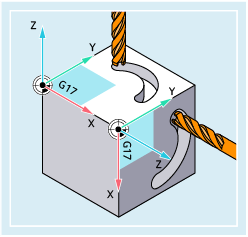
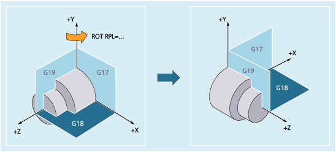

Weitere Informationen
Drehung der Arbeitsebene
Bei einer Drehung mittels ROT/AROT dreht sich die Arbeitsebene (G17/G18/G19) mit.
Beispiel:
Das WKS liegt auf der Deckfläche des Werkstücks. Durch Verschiebung und Drehung wird das Koordinatensystem in eine der Seitenflächen verschoben. Die Arbeitsebene G17 dreht sich mit. Hierdurch können Verfahrbewegungen in der G17-Ebene weiterhin über X und Y und Zustellungen über Z programmiert werden.
| Hinweis |
Das Werkzeug muss senkrecht zur Arbeitsebene stehen und die positive Richtung der Zustellachse zeigt in Richtung Werkzeugaufnahme. Durch Angabe von CUT2DF wirkt die Werkzeugradiuskorrektur in der gedrehten Ebene. |
Drehung um die zur Arbeitsebene senkrechte Achse
Bei Programmierung mittels RPL=… wird das WKS um die zur aktiven Ebene senkrechte Geometrieachse gedreht:
Ebenenwechsel
 | Warnung |
WKS-Drehung bleibt nach Ebenenwechsel wirksamWird nach einer WKS-Drehung ein Ebenenwechsel (G17/G18/G19) programmiert, bleiben die aktuellen Drehwinkel der jeweiligen Achsen erhalten und wirken auch in der neuen Ebene. Es wird daher dringend empfohlen, vor einem Ebenenwechsel die aktuellen Drehwinkel durch auf "0" zurückzusetzen:
|